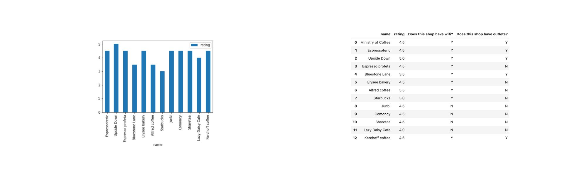
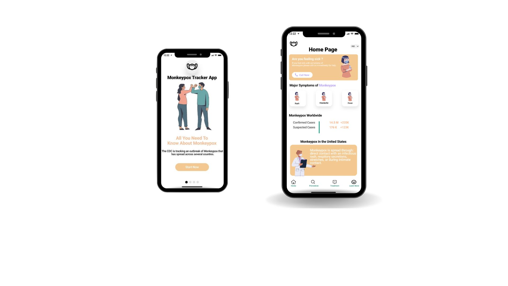

Data Science Project: Exploring best coffee joints in Westwood.
Believe it or not, caffeine calms my mind. I dont think there is a day that goes by at UCLA where I miss my morning cup of coffee. Lucky for me, there is a slew of cute cafés in Westwood village, and I have yet to explore them all. I wanted to put my debilitating caffeine addiction to good use with this independent data science project and aggregate the opinions of my fellow peers on the topic of coffee. What is the best coffee joint in Westwood?
1. Defining my data sources and tools
I used both Google Maps and Yelp to data scrap the top 14 coffee shops in Westwood, reviewing top ratings and crowd-sourced reviews. I wanted to include the opinion of my peers as well, so I ran an additional survey to gather final data points about the best coffee shops in Westwood from 15 UCLA students. I combined and compiled the data from the online sources and from my survey into one congruent data source. My tools used for the analysis are Python, SQL, Jupyter Notebook, and Tableau. My libraries used are Pandas, Matplotlib, and Sqlite3.
2. Webscrapping and compilating data
My data from the web-mapping platforms including Yelp API and Google Maps was scrapped using Webscaper Chrome Extension. This data along with my UCLA student data was linked and exported into a single CSV file. The relevant parameters were listed according to source, including whether or not the shop includes wifi, outlets, and its proximity to UCLA campus.3. Tableau Prep and Execution
My data was imported into Tableau Prep and scanned for error. Only data relevant to analysis was exported to the map. I used Tableau Desktop to run data visualizations based on my key parameters listed above. These key variables are what I and my fellow peers consider to constitute a 'top-tier' Westwood café. Finally, I ran a SQL query in Jupyter Notebook to get a final look at the data, as you can see below. You can find the full Jupyter notebook hereAnalysis
 There is a positive correlation between cafe rating, presence of outlets, and option of wifi. The shops with the highest ratings either have wifi, outlets, or both, which confirms my theory of key variables for UCLA students. One outlier in my data is the Starbucks. The location has wifi but its ratings are exceptionally low. This is likely due to the fact that it is the farthest datapoint on the map and is not frequented by UCLA students. There is a secondary Starbucks much closer to the village but it was not included in the dataset. This would explain the exceptionally low ratings for the Starbucks data point. Thus, we can consider proximity to UCLA as a good indicator for high ratings. To discuss some limitations, we should take into consideration the fact that there could be many variables to determine a 'top tier coffee shop' in Westwood aside from outlets and wifi. When looking at the final analysis we need to keep in mind its limitation.Final recommendation
Through this data analysis, I have come up with a final reccomendation factoring in the key variables of rating, proximity to UCLA, wifi, and outlets. All of the data analysis supports Upside Down as the best coffee shop in Westwood village. With it being a five minute walk from campus, its free outlets and wifi, and its affordable prices, I highly recommend you visit next time you find yourself in Los Angeles.
Monkeypox Tracking App: Design and prototype a data-driven tracking app.
In the summer of 2022, I chose a passion project to work on aside from my summer internship. Supporting public health and wellness is a personal mission of mine and I wanted to design and develop a product that would fulfill this.
What does the Monkeypox Tracker do? As of today, there are 6,326 confirmed Monkeypox cases in the United States and even more troubling is a widespread sentiment of fear and stigma surrounding the virus. I wanted to develop a product that not only combats disinformation but facilitates a safe recovery for those who may be infected. As we saw with the COVID-19 pandemic, infection can be an isolating experience and I wanted to find a way to humanize people with Monkeypox. Monkeypox Tracker is an app that uses API integrated data pipelines to pull real-time data about case numbers.
Project Scope: Create the foundational functionality of the Monkeypox Tracker App with user friendly UI and API integrated data so that global users can easily access information about the spread of the virus. My minimum viable products are: (1) Share accurate information about the symptoms of Monkeypox, (2) provide users advice on what to do if they develop Monkeypox symptoms, and (3) provide a live tracking map of confirmed cases in the United States.
Key Value Drivers: Identifying and managing value drivers helps designers to focus on the scope of the product. The key values that drive my Monkeypox tracker app are: The central capacity powering the usability of my Monkeypox tracking app is its API integrated data. The tracking interface uses a data pipeline that delivers data in real time so users can get vital information about the virus fast. Users want to know fast facts and accurate data about confirmed Monkeypox cases. The quality and value of the tracking app is based on correct and detailed information. With everything taken into consideration, I created a running record of the Monkeypox tracking app, as seen above. I used Figma and BravoStudios to prototype my app and create interactive flows to explore user interactions. The above UX/UI design is my final deliverable.

GRACE: Developing and curating impactful content.
I am the president and co-founder of the Genocide Relief, Awareness, and Community Education. We are a youth-led, UCLA student organization focused on genocide prevention.

As a descendant of a survivor of genocide, I have always been passionate about seeking justice for wrongful acts. In 2020, I co-founded the GRACE at UCLA to cultivate a student-led community of passionate individuals dedicated to amplifying and empowering survivors of genocide. Our organization has led several fundraising campaigns for survivors of various genocides.
If COVID-19 taught us anything, it was the power of the internet. GRACE utilizes our online platform full of art, literature, and research to accurately relay information and awareness surrounding genocide. We believe it is important to diversify the experience of survivors through visual and auditory content. Our personal relations and research committees are dedicated to engaging our audience on worldwide issues with webinars, panels, speaking events, and most importantly social media design and campaigns. You can view our Instagram platform here.